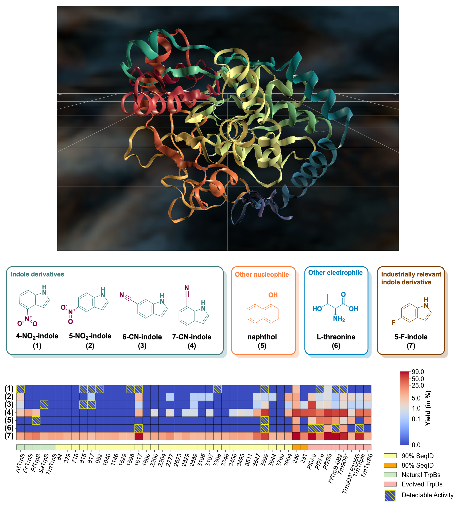
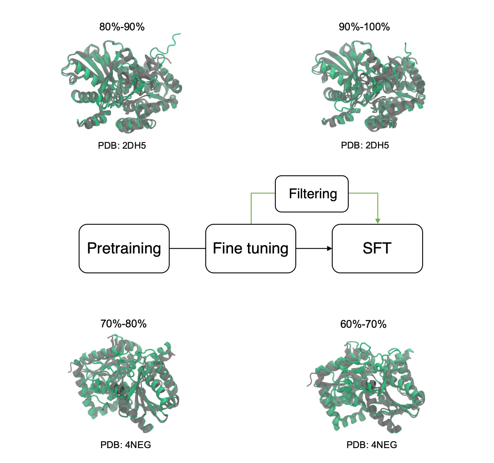
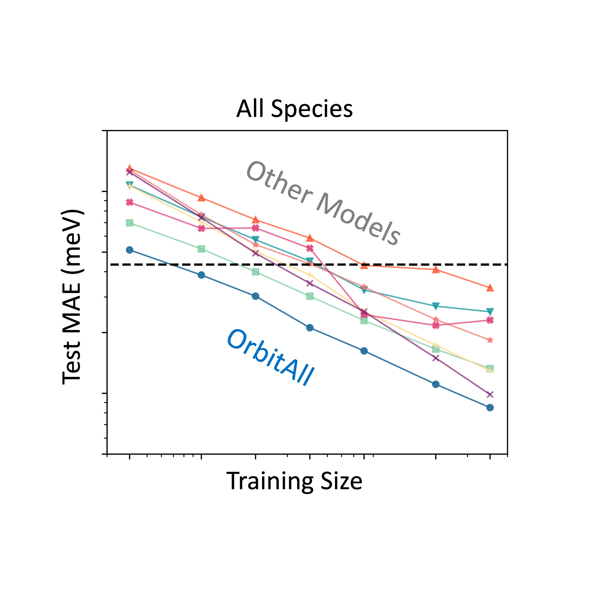
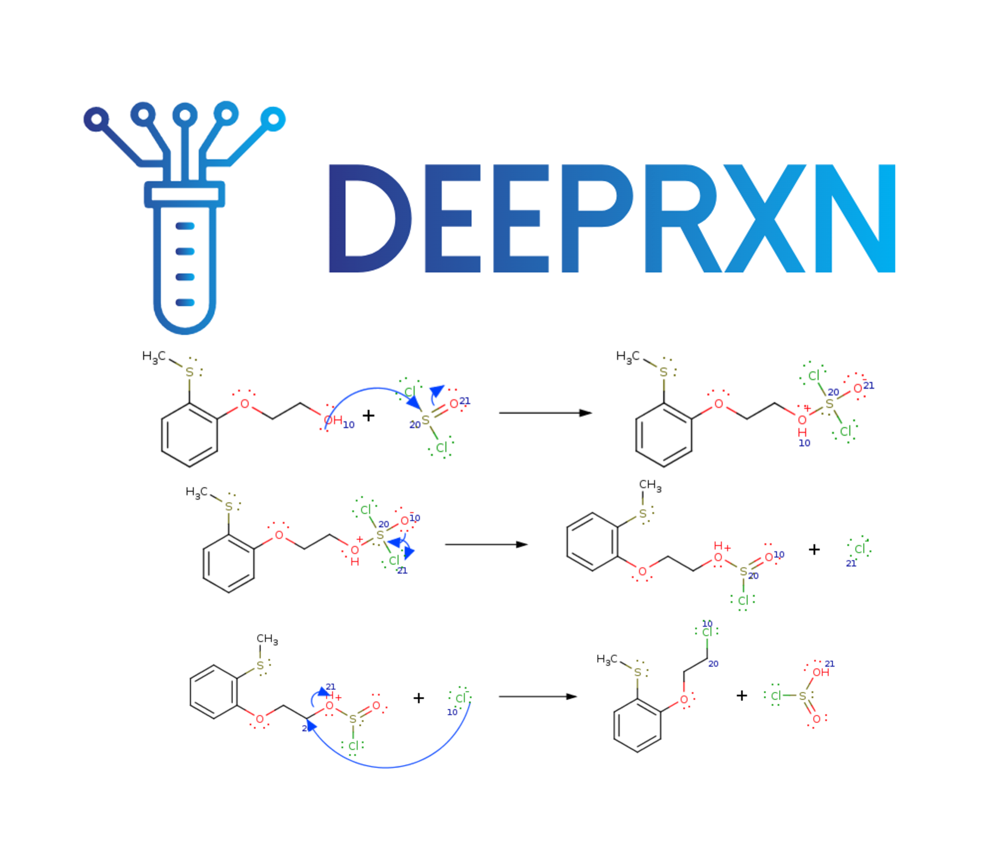
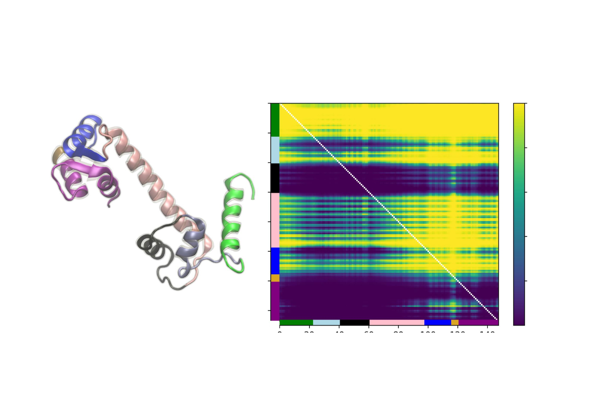
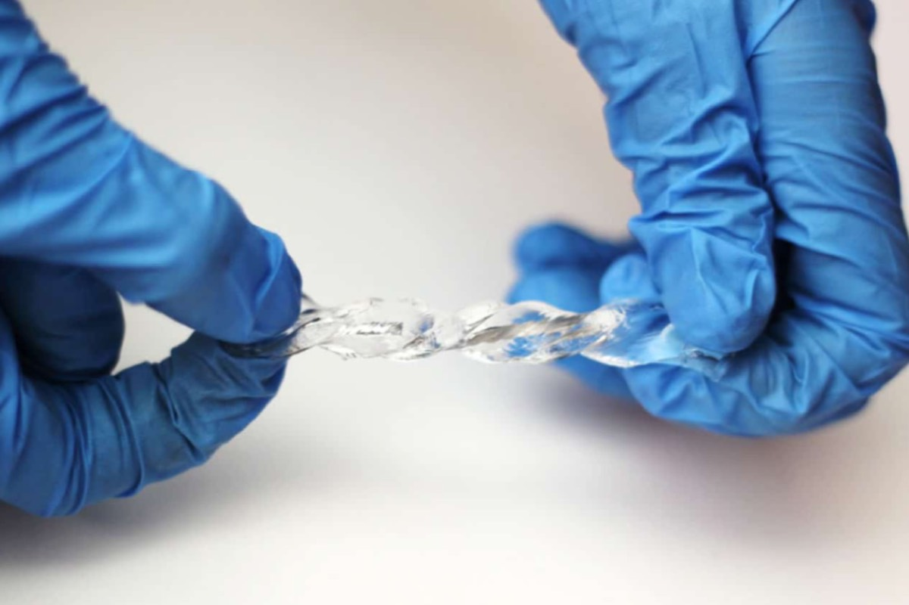
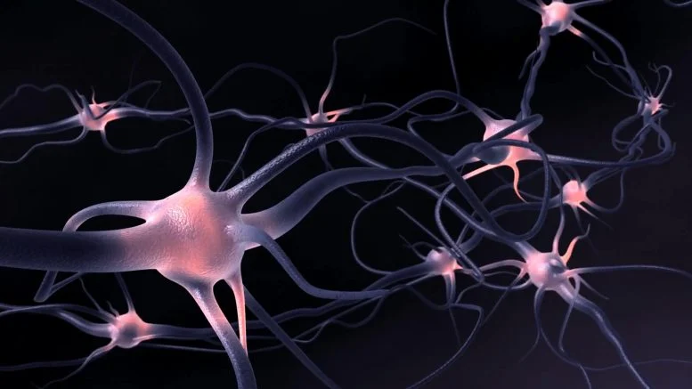

I am a postdoctoral scientist at Caltech, working with Anima Anandkumar and Frances Arnold in the AI + Science group. My research focuses on developing new machine learning methodologies for scientific discovery, with applications in protein design, chemistry, and quantum physics. I earned my PhD in Computer Science from the University of California, Irvine, where I worked with Pierre Baldi in the AI in Science Institute. During my PhD, I conducted research on developing AI methodologies for molecular design, reaction prediction, and computational modeling of chemical processes, as well as advancing the theoretical foundations of deep learning.
You can find my publications here: Google Scholar

We use the GenSLM protein language model (PLM) to perform sequence-conditioned generation of TrpB enzyme variants, addressing a major challenge in biocatalyst design: finding functional starting points for optimization. By combining generative modeling with computational filtering, the approach produces sequences that are stable, expressible, and catalytically active, some operating independently of their natural partner. Several AI-generated variants outperformed both natural and lab-optimized enzymes, showing that the model captures latent functional patterns and can propose non-trivial, high-performing sequences beyond evolutionary examples. This demonstrates that PLMs can act as powerful generative priors for functional protein engineering, enabling AI-driven exploration of functional sequence space with minimal experimental iteration.
PDF
We propose a general and efficient supervised fine-tuning (SFT) framework for protein language models (PLMs) to improve the fidelity and functional relevance of generated sequences while controlling their diversity. Due to the limited availability of experimentally annotated data, our method constructs training sets directly from the PLM using lightweight, domain-specific biophysical filters. These filters both curate high-quality sequences and identify candidates for experimental validation. Applied to a genome-scale PLM (GenSLM) on the tryptophan synthase family, this approach yields more novel sequences with improved stability and design-relevant properties.
PDF
While deep learning has advanced quantum chemistry, most models remain limited to neutral, closed-shell molecules. In contrast, real-world systems involve varying charges, spins, and environments. We present our model—a geometry- and physics-informed deep learning framework that incorporates spin-polarized orbital features and SE(3)-equivariant graph neural networks to represent arbitrary molecular systems. Our model accurately predicts properties of charged, open-shell, and solvated molecules, and generalizes to much larger systems than seen during training. It reaches chemical accuracy with 10× less data than competing models and offers a 1,000–10,000× speedup over DFT, thanks to its physics-grounded design.
PDF
DeepRXN is a specialized platform designed to advance the integration of deep learning into chemoinformatics, hosting predictive chemoinformatics software and public chemical reaction databases. Its unique focus on representing chemical reactions through elementary step reactions offers numerous advantages, with applications spanning reaction prediction, synthetic planning, atmospheric chemistry, drug design, and beyond. This innovative perspective holds the potential to reshape and elevate various aspects of chemical research and applications within a singular framework.
PDF
Machine learning models for protein engineering typically use sequence-based, structure-based, or combined representations rooted in the idea that sequence and structure inform function. While effective in capturing evolutionary patterns, these approaches often overlook protein dynamics. We introduce a dynamic-aware representation derived from unsupervised analysis of molecular dynamics simulations. By encoding temporal and spatial behaviors, our method captures key interactions within the protein chain, offering valuable insights for protein design.
PDF
We developed an AI-based reaction prediction system to uncover the mechanism behind a novel hydrogel with extraordinary stretchability—capable of extending up to 260 times its original length. The AI reveals a previously unknown network formation process in which polyethylene oxide (PEO) chains create scission-prone links between dimethylacrylamide-based polymer networks cross-linked by methylenebisacrylamide. These insights guide the hydrogel's synthesis through targeted optimization of key components: APS, methylenebisacrylamide, dimethylacrylamide, and PEO. Experimental validation via FTIR spectroscopy confirms AI-predicted mechanisms, including PEO-carboxyl chain scission. We term the resulting structure a Span Network—an architecture central to the material's extreme elasticity.
PDF
Training deep neural networks in biological systems is faced with major challenges such as scarce labeled data and obstacles for propagating error signals in the absence of symmetric connections. We introduce Tourbillon, a new architecture that uses circular autoencoders trained with various recirculation algorithms in a self-supervised mode, with an optional top layer for classification or regression. Tourbillon is designed to address biological learning constraints rather than enhance existing engineering applications. Preliminary experiments on small benchmark datasets show that Tourbillon performs comparably to models trained with backpropagation and may outperform other biologically plausible approaches. The code and models are available at https://github.com/IanRDomingo/Circular-Learning.
PDFLast update: March 2026